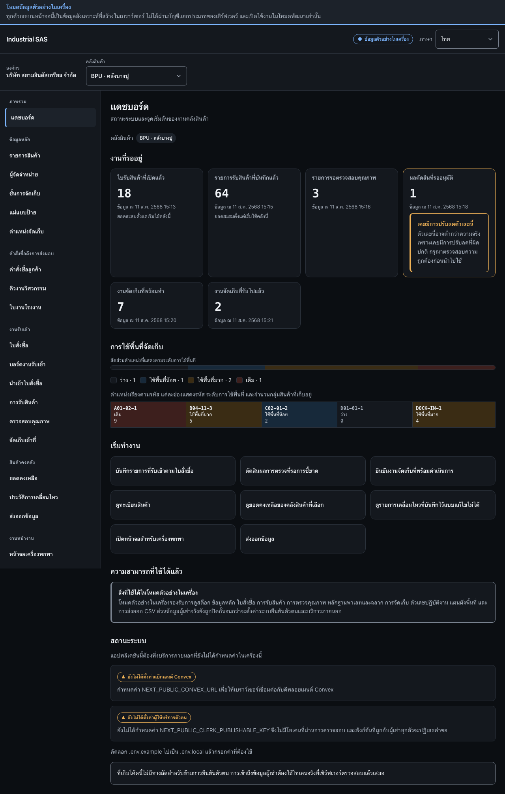

เริ่มต้นใช้งานและเลือกคลังสินค้าStart work and choose a warehouse
ตรวจสอบองค์กรและคลังสินค้าที่กำลังทำงานอยู่ แล้วเลือกงานถัดไปจากแดชบอร์ดConfirm the active organization and warehouse, then start a task from the dashboard.
สิ่งที่ต้องมีก่อนเริ่มBefore you start
- เข้าสู่ระบบด้วยบัญชีที่เป็นสมาชิกขององค์กรSigned in with an account that is a member of the organization
- มีคลังสินค้าอย่างน้อยหนึ่งแห่งที่บัญชีนี้เข้าถึงได้At least one warehouse the account may access

ขั้นตอนSteps
- ที่กรอบ 1 เลือกคลังสินค้าที่ต้องการทำงาน ข้อมูลทุกหน้าหลังจากนี้จะอ้างอิงคลังสินค้าที่เลือกอยู่In box 1, choose the warehouse to work in. Every screen after this reads the warehouse selected here.
- ที่กรอบ 2 เลือกงานที่ต้องการเริ่ม เช่น รับสินค้า ตรวจสอบคุณภาพ จัดเก็บ ดูยอดคงเหลือ หรือส่งออกข้อมูลIn box 2, choose the task to start: receiving, quality, putaway, balances, or export.
- ตรวจสอบชื่อคลังสินค้าที่แสดงใต้หัวข้อ “แดชบอร์ด” ก่อนเริ่มงานทุกครั้งCheck the warehouse name shown under the “Dashboard” heading before starting, every time.
ตรวจว่างานสำเร็จอย่างไรHow to tell it worked
- ชื่อคลังสินค้าที่ต้องการปรากฏทั้งในแถบบริบทและบนแดชบอร์ดThe intended warehouse name appears both in the context bar and on the dashboard.